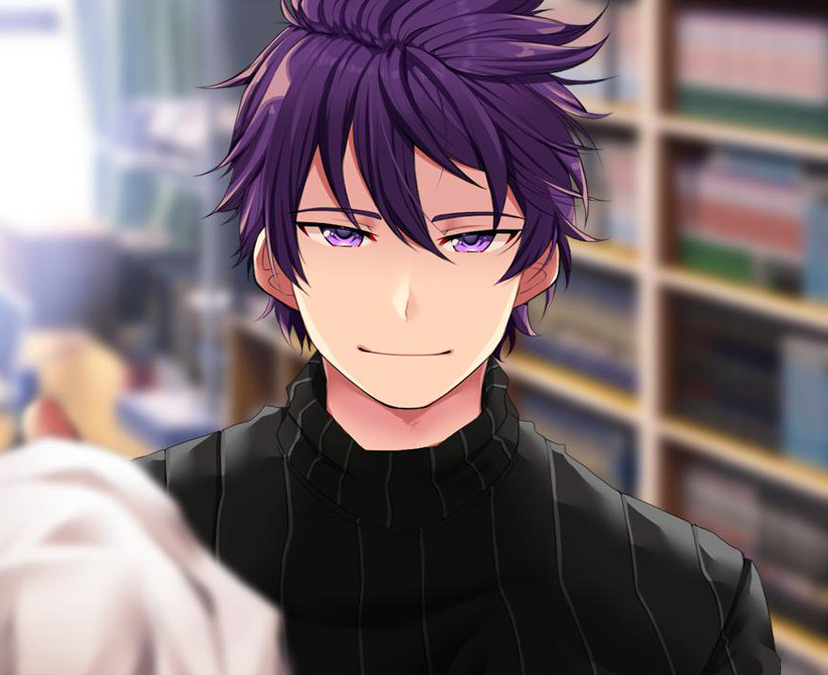

Doki Doki Switcheroo
Doki Doki com uma nova cara! Apresentando novos sprites, novas músicas e, tecnicamente, novos personagens, jogue como uma protagonista feminina enquanto tenta conquistar seu Doki favorito ... em um clube de literatura com garotos. Agora, não há realmente uma tonelada que eu possa dizer sobre Switcheroo, considerando que é basicamente o jogo básico construído em torno de garotos, mas eu reescrevi o que pude.
⬇ Download